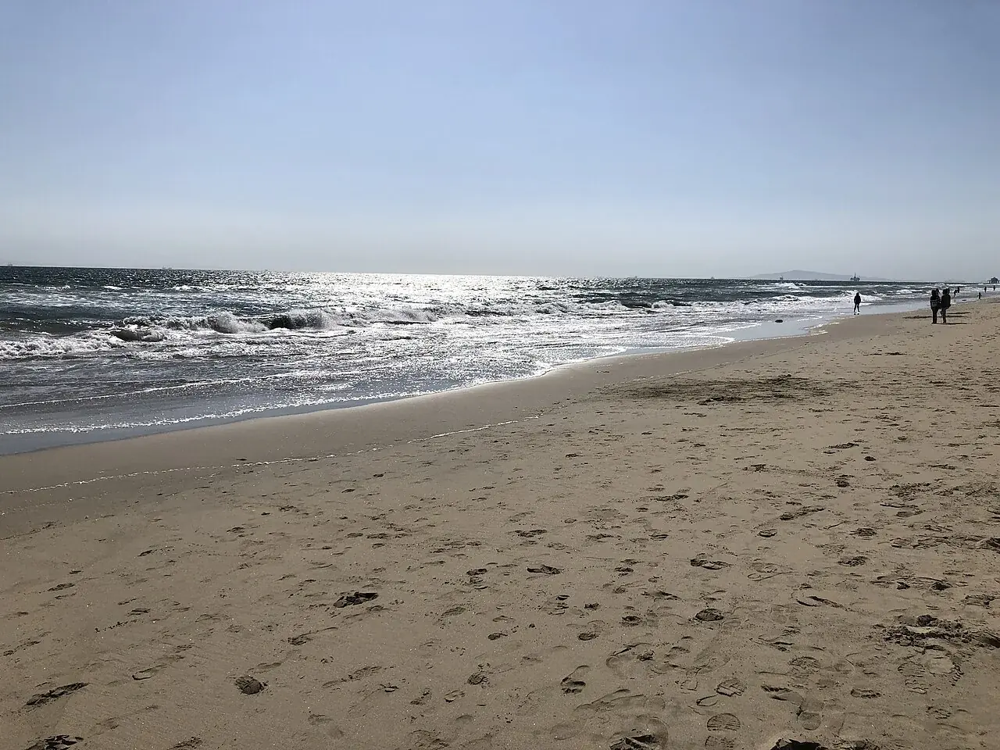

Huntington State Beach
Californie, États-Unis · surf

Une grande plage californienne gérée par les State Parks. Le surf occupe une place centrale sur ce littoral d’Orange County.
- Lieu
- Californie, États-Unis
- Niveau
- Variable selon les conditions
- Activités
- surf
- Type d'eau
- Mer / océan
- Coordonnées
- 33.64, -117.97 (position approximative du secteur)
Ouvrir dans Ocean Buddy Télécharger sur l'App Store
Source : California State Parks.